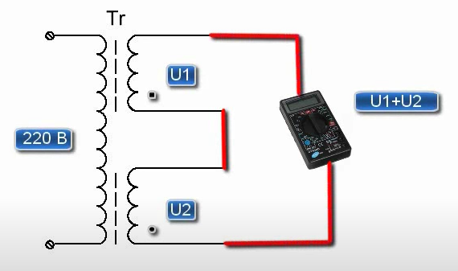
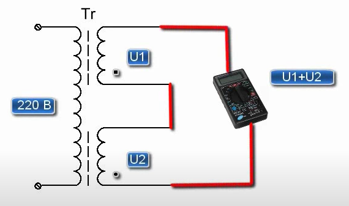

Трансформаторы
1.На первичной обмотке сопротивление намного больше чем на вторичной
Последовательное подключение обмоток трансформатора

обмотка обмотки найти опредилить как первичная вторичная
1.На первичной обмотке сопротивление намного больше чем на вторичной
Последовательное подключение обмоток трансформатора
